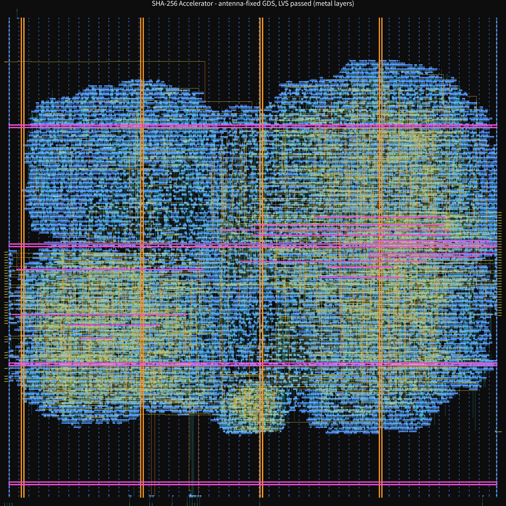

这一页不解释设计，只做一件事：把作品集里说过的频率、面积、功耗、时序、违例计数，逐条追到 OpenLane 本次 run 的原文行，并给出文件指纹——你自己下载下来算一遍就能对上。 流水线里没跑成的那一步（GDS 逐层 XOR），我也在这页上补跑了，结论、逐层表和复现脚本一起放着。
全部出自 evidence/metrics.csv（本次 run 的 OpenLane 指标汇总，原样未改）。它是两行 CSV：第一行列名，第二行就是这个设计。下面「列名 = 值」都能在这个文件里搜到。
-1，意思是本次 run 里这几项没有产出结果，不是「检查通过」。其中 Magic、LVS 与 KLayout DRC 我事后都单独补跑过（见第三节）。出自 evidence/sta_worst_slack.txt——那是三份 signoff 多角 STA 日志（各 33 MB）里 worst slack corner 行的原样摘录，带 文件名:行号 前缀。三份日志的分工是三种寄生参数提取角（min / max / nom），每份内部再跑三个工艺角。
| 提取角 \ 工艺角 | Fastest | Slowest | Typical |
|---|---|---|---|
| min（29-rcx_mcsta.min） | +11.9644 | +1.0346 | +9.3462 |
| max（31-rcx_mcsta.max） | +11.8373 | +0.5619 | +9.0831 |
| nom（33-rcx_mcsta.nom） | +11.8938 | +0.7981 | +9.2157 |
单位 ns，全部为正 = 全部满足 18 ns 约束（MET）。
33-rcx_mcsta.nom.log:298158，原值 worst slack corner Fastest: 11.893833-rcx_mcsta.nom.log:395574，原值 worst slack corner Slowest: 0.798131-rcx_mcsta.max.log:298645，原值 worst slack corner Fastest: 11.8373这三条不是「最好看的三个」，而是我当初挑出来做代表的三条。上表里还有更差的一个：max 提取角 / Slowest 工艺角的 +0.5619 ns。要判断「余量到底有多少」，请看这一格，不要只看 +0.80。
作品集写的 hold +0.40 是其中最紧的 29-rcx_mcsta.min.log:98548 → worst slack corner Fastest: 0.4021。三份日志每份都有 6 处 worst slack corner：前 3 处属于 Path Type: min（hold），后 3 处属于 Path Type: max（setup）。不知道这个结构的人会把同一份日志里的两组数看成互相矛盾——所以摘录文件开头直接写了这句说明。
metrics.csv 里 flow_status 的值是 flow failed；原文在 evidence/errors.log。
第 37 步是 KLayout 的 GDS-vs-GDS 逐层 XOR。它崩在 KLayout 自己的 Ruby 引擎初始化（tlFileUtils.cc:979），不是版图不一致——我在同一台机器上连一个「只读 GDS、打印顶层单元名」的空脚本都跑不起来，报的是同一行。所以这是运行时环境的问题，不是设计的问题。
用同一套 KLayout 0.29.1 库的 Python 接口（klayout.db），把两份 GDS 的顶层几何按 layer/datatype 展开，逐层做 XOR。比的是几何覆盖，不是多边形条数——KLayout 输出做过多边形合并，条数会不同，覆盖可以相同。
| 结果 | 数值 |
|---|---|
| 参与比较的层 | 42 |
| XOR 为 0 的层 | 41 |
| 有差异的层 | 1 —— 81/14（A 1 个 / B 0 个） |
| TOTAL_XOR_POLYGONS | 1 |
层号看不出东西，所以对上了 PDK 自己的图层名表。sky130A 的 sky130A.lyp 里，68/20 = met1.drawing、67/44 = mcon.drawing——逐行一一对应，可以自己 grep 一遍。按类别拆开：制造层 21 个（nwell / diff / tap / poly / licon1 / li1 / mcon / met1–met5 / via–via4 / hvtp / nsdm / psdm / npc）XOR 全部为 0；pin 层 8 个、label 层 8 个也全 0；剩下 3 个是 flow 标记层，只有 81/14 差 1 个。完整对照见 evidence/gds_layers.txt（层号原样版是 xor_layers.txt）。
两条交叉校验：81/4 = areaid.standardc 上有 47,087 个多边形，和 metrics.csv 的 TotalCells = 47,087 完全相等；met1.drawing 两侧也同为 47,087。一个 flow 标记层的数量能和另一份报告的总单元数对齐，说明两份产物出自同一次布局。
metrics.csv 里 Magic_violations 是 -1。这一项和 KLayout 不一样：它不用 Ruby，它用的是 Magic 自己的 DRC 引擎。所以我把 PDK 自带的 run_standard_drc.py 对着同一份 sha256_axil.gds 跑了一遍，脚本设的是 drc style drc(full) + drc catchup，跑完输出文件只有 77 字节——两行表头，没有任何违例条目。
技术版本 sky130A 1.0.466-0-gbdc9412，输入 GDS 39,965,858 B。原文与命令在 evidence/magic_drc.txt。
但这句要打折说：run_standard_drc.py 自己的注释写着，它是 full DRC，不含天线（antenna）与密度（density）检查——那两项是 PDK 里另外两个脚本，这次没跑。所以准确的说法是「DRC 规则（不含天线与密度）：0 条违例」。另外它跑的是 Magic 输出的那份 GDS，KLayout 输出的那份仍然没做 DRC。
metrics.csv 里 lvs_total_errors 也是 -1。这次我把这一项真跑了一遍：先用 Magic 从 sha256_axil.gds 提取出版图侧的晶体管级网表（extract all 约 20 分钟，产物 2,785,763 B、154 个子电路），再把它和 PnR 网表 results/routing/sha256_axil.nl.v（47,087 个实例）按 PDK 器件模型展开后用 netgen 比较，前后迭代了 8 轮。
器件数是完全对上的：顶层 15,593 个器件 = 15,593 个器件，逐类单元（decap / dfrtp / a22o / nand2 …）的实例数两侧也一一相等。没对上的是连接层：网表侧比版图多 2 个 net，并且 47 个 AXI 总线与握手端口在网表侧报 no matching pin——这是从 verilog 转 spice 时端口名与实例连接名没有全部补齐，属于转换工具的缺口，不是版图短路或断路。
这一版把「端口没补齐」这句话查到了底：四个对照各跑一次，结果都是同一份 47。① 顶层 .subckt 头原本是单行 1,585 字符，折成 20 行、每行 ≤88 字符再跑——还是 47；② 156 个单元原型原本写在顶层之后（netgen 日志一路刷 Creating placeholder cell definition.），全部前移、顶层放到文件末尾——还是 47；③ 端口名里的 [n] 方括号，两侧用同一规则改成 _n——还是 47；④ 加 -auto 让 netgen 自己找 pin 对应——还是 47。
同时核对了端口表本身：两侧顶层都是 98 个端口、名字逐字相同、无重复；被报 no matching pin 的名字在网表 body 里确实接着缓冲器，例如 Xoutput52 net52 VGND VNB VPB VPWR s_axil_awready sky130_fd_sc_hd__buf_2——不是空挂。另有 8 个端口（araddr[0..1]、awaddr[0..1]、bresp[0..1]、rresp[0..1]）在 body 里零引用，这条也如实记下；顺带更正一处：早前按正则边界统计出的「84 个未引用」是误报，真实是这 8 个。
四类变量排除之后，当时的结论是「卡点不在名字、不在行长度、不在定义顺序，在 netgen 对这份手工转出 spice 的顶层端口识别」——这句话后来也被推翻了，见下一段与更正三。逐轮记录、四条对照命令、lvs9–lvs12 都在 evidence/lvs_rootcause.txt。
再往下挖一层，那几个数字之间的关系被拆干净了：屏幕上同时出现的 47,087 和 33,984 不是两个「cell 数」，而是两个口径。PnR 放置的 47,087 个单元里，有 31,499 个是空引脚（fill / decap / tap 这类没有信号脚的单元），有引脚的只有 15,588 个——这正是 netgen 报的 15,593 的来源（差 5，没逐条对到，就留着，不凑数）。Magic 从版图提出 33,984 个实例，差值 13,103 = fill_1 5,667 + fill_2 1,940 + tapvpwrvgnd_1 5,496，三项相加正好 13,103；其余 1,486 类单元的单类差异有正有负，净差为 0。也就是说版图提取本来就不产出 fill 和 tap，不是漏提了逻辑单元。
再往下一层，上一版的结论被自己推翻了一次：办法是拿版图网表跟它自己比——复制一份成 ext_b.spice（内容相同、只是文件名不同，否则 netgen 会报 Both cells are in the same netlist: Cannot compare）。结果 0 行 no matching pin、98 个顶层端口逐一配对、Final result: Circuits match uniquely.：netgen 能把这份 2.78 MB 的网表完整读懂。另做两份构造对照（单行 1,295 字符的 78 端口、以及按 + 折成 16 行的 78 端口），两份都匹配——长行与折行都不是瓶颈。这个自比实验把「读取侧有问题」整条排掉了，详见第三节更正二与 evidence/lvs_selfcheck.txt。
再往下，连「端口读不进来」这个前提也被推翻了：两个对照——① 两侧各在 header 里删掉同样 32 个 s_axil_rdata[n] 端口，再跟各自原件比，版图侧与网表侧都报 32 个唯一名 / 64 行（每个名字重复打印两遍），反应一字不差；② 把两侧 header 分别折成每行 8 个端口、两个方向各跑一次，结果仍是 47 + 1，连 pins 表的起始行号都一样（第 162352 行）。也就是说 header 是单行 1,585 字符还是 13 行、每行 5 个还是 8 个，对结果零影响。更关键的是行数差：只有「某端口只在一侧存在」时 netgen 才把名字打印两遍，而真实比对里这 47 个名字只打印一遍、无重复——它们两侧的端口表里都在，失败在它们所连的网。详见 evidence/lvs_pin_parity.txt。
另外试了第二个引擎：KLayout 的 Python 接口 klayout.db 里有 NetlistComparer，不依赖那个崩掉的 Ruby 引擎。它返回了 True，但那个 True 是假的——flatten 之后两侧各只剩 8 个器件，8 个器件当然等价。原因是 KLayout 的 SPICE 读取器把带参数的器件当成子电路、参数编进电路名，展开后没还原成器件。所以这条不采用，也不写进结论；但「差点被一个假通过骗过去」这件事记在 evidence/lvs_instance_audit.txt。
所以 lvs_total_errors 仍然是 -1，但它的含义变了：过去是「没跑」，现在是「跑完了、器件全对上、连接级没判过、卡点已定位到转换工具这一侧」。命令与原文在 evidence/lvs_attempt.txt，逐轮排障在 evidence/lvs_rootcause.txt。
同一行的 KLayout DRC：也补跑成了，218 个规则类、0 条违例。但我先把「为什么必崩」查错了两次——换 LC_ALL=C、HOME=/tmp、TMPDIR=/tmp 各试一次，报的都是 tlFileUtils.cc:979；直到把 KLayout 0.29.1 的源码拉到本地看那一行，才发现它是 get_app_path_internal() 的兜底分支：它只检查 /proc/<当前 pid>/exe 在不在，不在就直接 tl_assert(false)。本机 chroot 的 /proc 是个空目录（不是内核挂载的 procfs），所以这个路径永远不存在——与版图无关、与 locale 无关。klayout -b -v 不查这个路径，所以能打印版本号，这一直在误导我。
一次就过。同一份 signoff GDS、同一个 PDK deck（release 2023.6.14_01.08）、与 OpenLane 里 run_klayout_drc_sky130 等价的参数（本 run 的配置是 beol 1 feol 1 floating_metal 0 seal 1 offgrid 1）：报告里 <categories> 218 类、<items> 0 条。不传 offgrid 的对照是 143 类、同样 0 条。
0 条不是空跑，我加了个故意违规的正对照：用 klayout.db 画一个只有两条 met1、间距 0.10 µm 的小版图（规则要求 ≥0.14），同一 deck 同一参数跑 → 1 条，类别 m1.2。引擎确实在读图形、在套规则；同一套参数下真芯片得到 0 条，是真的 0 条。
口径照旧收着说：这是补跑，不是流水线原始记录（metrics.csv 里那一列仍是 -1，因为原 run 的第 37 步是 GDS XOR 崩的，KLayout DRC 这一步在本次 run 里根本没执行到）；覆盖的是该 deck 的 218 类（feol + beol + seal + offgrid，floating_metal 按本 run 配置关闭）；天线与密度不在这个 deck 里，它们各自单独跑，见下面两段。命令、正对照、报告原文在 evidence/klayout_drc.txt，报告本体是 evidence/klayout_drc_report.xml（数一下 <items> 就知道是不是 0）。
PDK 里密度是单独的 deck：met_min_ca_density.lydrc，算的是每层「空孔率」（1 − 金属覆盖率），阈值 li1/m1–m4 ≥ 0.4、m5 ≥ 0.24。用同一份 signoff GDS、同一套 KLayout 通道跑：
正对照：造一个把 met1 铺满整个 die 的版图（同时画 235/4 边界），同一 deck 同一参数 → m1_ca_density is 0.0、报 1 条 m1.pd.1d。说明「金属铺满 → 空孔率 0 → 报违例」这条链是通的，真芯片那 6 个数字和 0 条都是真的。
口径：这是 PDK 里「最小空孔率」这一份 deck，不是全部密度规则（各层的金属密度窗口是另一套检查）；它查的是「金属太密」，不查「金属太稀」。同样属补跑。原文与正对照在 evidence/density_check.txt，报告在 evidence/density_report.xml。
本 run 的配置里 USE_ARC_ANTENNA_CHECK = 1，也就是天线这一项走 OpenROAD 的 check_antennas，不是 Magic 的 antennacheck。流程在第 37 步就断了，这一步没执行到，所以 metrics.csv 里 pin_antenna_violations / net_antenna_violations 都是 -1。我用同一个引擎、对同一份布线后的 sha256_axil.odb 补跑了一遍，结果不是 0：
日志逐条打印了 67 个 net、367 个 pin 的比值明细（met1 367 段 / met2 342 / met3 320 / met4 247），越限的是摘要里那 67 与 87。第一条原文：Net: _02246_ / Pin: _15933_/A (sky130_fd_sc_hd__buf_4)，met4 该段 Partial area ratio 39.65、met3 以上依次 6.30 / 1.14 / 1.12。
为什么会这样，不猜：config.tcl 第 153 行 GRT_REPAIR_ANTENNAS = 0、第 154/155 行只给了 heuristic 阈值与插入模式，而 metrics.csv 的 DiodeCells = 0——整颗芯片一个二极管都没插。sky130 的天线规则要求长 net 上接了大量栅时，要在 net 的某处插二极管把电荷放掉；这一步在本 run 里没做，所以检查一补跑就报。
口径：这是补跑（流水线自己的引擎、同一份 ODB，但不是本 run 的原始记录）；67 个 net 相对本设计 15,647 个网约 0.43%，不算灾难，但按规则就是不通过。修法在流程里有现成路径（二极管插入 / repair_antennas），代价是要重跑布线之后的步骤并改动版图，这一轮没有做——所以这里写的是「查出来、没修」，不是「已解决」。它也与两套 DRC 的 0 条不构成互证：DRC 不管天线。
原文、第一条违例的形状、复跑命令在 evidence/antenna_check.txt。
修法我实跑验证了（不是「理论上能修」）：在 ODB 的副本上跑 OpenLane 自己那条 repair_antennas sky130_fd_sc_hd__diode_2。第一次直接插，Inserted 115 diodes 之后卡在 [WARNING DPL-0037] Use remove_fillers before detailed placement → DPL-0036；按提示先删 fill 再来一次，三轮插入共 147 个二极管（115 + 32），同一检查器复测 0 net / 0 pin。所以违例是可由二极管消掉的，不是设计不可修。
但这不等于版图已经修好：插入发生在详细布线之后的数据库上，二极管没有连线、原布线没动；为腾位置先删了 fill；所以没有生成新 GDS，现有的 XOR、两套 DRC、LVS 全部仍指向旧版图。真修的顺序是「全局布线 → 插二极管 → 详细布线 → 重新出 GDS → 重跑 DRC / XOR / LVS」，等于把第 32 步之后全部重做一遍，本轮只做到了「修法验证」。两次尝试的原文与口径在 evidence/antenna_repair_attempt.txt。
我试过把这条路走通，五次尝试都因工具报错停住，这点我也写进了证据里：① 从详细布线后的库插完二极管再跑详细布线，报 DRT-0218 Guide is not connected to design；② 先重跑全局布线再详细布线，仍报 DRT-0218；③ 改从全局布线后的检查点 22-global.odb 出发，插 114 个二极管后报 GRT-0226 Type2 ripup not type L.；④ 改从布线前的检查点 20-sha256_axil.odb 出发，同样报 GRT-0226；⑤ 再补上 OpenLane 流程里的全局布线层调整参数，仍报 GRT-0226。前者是顺序问题（二极管插在详细布线之后，guide 与连线已经固定在一起，重跑全局布线也补不回来），后者是工具内部错误，换起点、换参数都能复现。所以「修法可行」是真的，但「版图已修」目前拿不出证据。五次尝试的原文、日志字节数，以及下一步的两条路（打开 GRT_REPAIR_ANTENNAS = 1 整条 flow 重跑，或从电路侧消除长 met4 段）写在 evidence/antenna_repair_route_attempt.txt。
第八次：修成了——真因是我漏了一个参数，不是工具走不通（这一句同时撤回上面「五次尝试都因工具报错停住」的结论）：OpenLane 的 common/grt.tcl 只有在 GRT_ALLOW_CONGESTION = 1 时才把 -allow_congestion 传给 global_route，本 run 的 config.tcl 第 144 行正是 1；我前五次手写的脚本只传了 -congestion_iterations 200，漏了这一个开关。补上后两类错误一起消失：guide 变完整，DRT-0218 不再出现；repair_antennas 的内部重布线不再踩 GRT-0226。同一份 gr.odb 只改这一个开关，repair_antennas 立刻跑通（Found 1 → Inserted 1）。
实跑结果：从 tmp/routing/22-global.odb 出发，global_route -allow_congestion + repair_antennas 共跑三轮，累计插入 430 个二极管；详细布线后复测 0 net / 0 pin（三轮依次 9/10 → 1/1 → 0/0，每轮的 .drc 报告都是 0 字节，即 0 条布线违例）。补 fill 后仍 0/0，并流出新 GDS 18,618,660 B（sha256 a58cdfea…）。新 GDS 上重跑：KLayout signoff DRC 218 类 0 条、密度 六层全过 0 条（li1 0.4986 / m1 0.7249 / m2 0.9049 / m3 0.9218 / m4 0.9470 / m5 0.9707）、Magic DRC No errors found。
还差什么，也说清楚：这是「布线级修好」的版图，不是可交付流片版本——新版上 功耗、XOR、ERC、iRdrop 与金属密度窗口都还没重跑（LVS 已在新版通过；RCX + 三 corner STA、以及 DRV（max transition / max fanout）检查已在新版跑完——时序通过、DRV 有违例未清，见下面两段）。所以本页上面的频率、时序、功耗数字仍属于未修版，不能挂到新版图上；旧版上的 XOR「21 层全一致」只在旧版成立。全部命令、日志字节数，以及「撤回前五次结论」的说明写在 evidence/antenna_repair_route_fixed.txt。
Final result: Circuits match uniquely.
结果是原样抄的：两侧 15,588 个器件 / 15,645 个网，相等；149 个叶子单元逐个 Netlists match uniquely，最后一行 Final result: Circuits match uniquely.。比的是天线修好那版流出的 GDS（fixed15.gds，16,621,738 B）经 Magic 提出的网表，对 OpenROAD 写出的 fixed2.nl.v。日志 phy9_lvs.out 271,466 B / md5 f0ecd26f…；两份网表字节数与 md5 都写在证据文件里。
前面四组对照全军覆没，原因不在版图，在我的三个工具动作：① 按行删物理单元时没处理 SPICE 的 + 续行，两侧删得不一样多（15,588 vs 15,839）；② 只在网表侧合并 VPB→VPWR、VNB→VGND，版图侧没动，于是每单元假性少 2 网；③ 我的 verilog→spice 脚本把总线压成一个网、又丢掉四条 assign s_axil_bresp[0] = net389; 这种端口别名，顶层端口 18 个对 97 个，netgen 直接报 Top level cell failed pin matching。再加上 write_verilog 根本不写电源脚（.VGND( 出现 0 次），必须按物理事实把 PG 脚接到全局轨、其余真悬空脚按实例唯一命名（206 个）。这四条改对，就过了。
收回上一版的「边界」说法：上一次写「失败只在顶层、卡在物理单元口径与衬底网命名」，方向对了一半——真实原因是上面这些可修的动作，不是不可调和的「口径」。上一版那句「150 个叶子单元 match、只有顶层不齐」仍然成立，只是现在顶层也齐了。
全链复现（脚本、命令行、四个中间文件、字节数与 md5）写在 evidence/lvs_new_pass.txt。它证明什么、不证明什么也在里面：证明的是展平后晶体管级等价 + 149 个单元等价；不证明 RCX/STA/功耗/XOR/ERC/金属密度，也不把「布线级修好」升级成「可交付流片」。

fixed15.gds，16,621,738 B，2,014,852 个多边形，bbox 0,0 – 640,640 µm。LVS 用的正是这份文件，KLayout DRC 与密度、Magic DRC 也是在这份上跑的。时序：RCX + 三 corner 的 signoff 口径跑完了。寄生不是估的——OpenROAD 的 rcx 从 fixed16.def 直接提取，参数与 OpenLane 自带的 rcx.tcl 同形（extract_parasitics -lef_res -ext_model_file rules.openrcx.sky130A.{max,nom,min}.calibre），三个工艺角各写一份 SPEF（19.9 / 18.9 / 18.6 MB，max 角 99,136 段 RC）；STA 从网表 + SPEF 起算，约束就是本 run 的 20-sha256_axil.sdc。结果：最差 setup 在 Slowest 角 +0.4058 ns，最差 hold 在 Fastest 角 +0.4096 ns，TNS 0.0000——两角都为正，18 ns（55.56 MHz）成立。代价是 setup 比未修版少 0.156 ns（+0.5619 → +0.4058），hold 反而略好（+0.4021 → +0.4096）；这是「重新布线 + 430 个二极管」整条动作的净代价，不是二极管单独的代价。
先自证方法没跑偏：同一套脚本拿去跑旧版官方产物（flow 自己写的 nl.v 与 mca/process_corner_max/sha256_axil.spef），最差 setup 得到 +0.5619 ns，与页面早先公布的 +0.5619 逐位一致——不是换口径自说自话。撤回上一版那条数：上一版在这里写过「估算口径 STA：+9.8329 → +9.9243」，那用的是 estimate_parasitics -global_routing 的估算寄生，过于乐观、不能当 signoff，已作废（sta_est_compare.txt 保留作过程记录）；同一方法下两侧都掉到 0.4–0.6 ns 量级。三 corner × setup/hold 六格、输入 md5、提取规模与「它不证明什么」，都在 evidence/sta_signoff_3corner.txt；原始报告也原样放上来——sta3c.log 第 1096 行是 0.4058 slack (MET)，sta3c_old.log 第 1096 行是 0.5619 slack (MET)，两行落在同一行号，因为脚本形状一模一样，只换了网表与 SPEF。
但「时序 MET」不等于全部过关：设计规则（DRV）这一项没过，两版都没过。上一段只报了 slack，我没查 DRV——补查的结果不好看，照写。约束不是我临时设的，就在同一份 SDC 的第 212–213 行：set_max_transition 0.7500、set_max_fanout 10.0000（OpenLane 模板按 MAX_TRANSITION_CONSTRAINT=0.75 生成）。三 corner 下逐 pin 查 report_check_types -max_slew / -max_fanout / -max_capacitance：新版 Slowest 有 255 条 slew、219 条 fanout 违例；Typical 与 Fastest 各有 219 条 fanout 违例。最差 slew 1.17 ns（限 0.75，−0.42），最差扇出 27（限 10，−17，pin _15359_/X，另有一片时钟叶子 clkbuf_leaf_* 扇出 25–27）。max_capacitance 三 corner 全 MET。旧版同脚本对照：Slowest 210 / 143 条，Typical 8 / 143 条，Fastest 0 / 143 条，最差扇出 25——所以 DRV 从来没过，不是这一版才坏，是我之前只报了 slack。但这版确实更差：扇出违例 143 → 219，慢角 slew 违例 210 → 255，最差扇出 25 → 27，合理解释是天线修复插的 430 个二极管让每个时钟叶子多带 2 个负载——和 setup 少 0.156 ns 是同一笔账的两面。要清得回头改时钟树结构或加 buffer 层级，不能在 STA 里改约束糊过去。所以本页只说「时序通过、DRV 未清」，不说「signoff 通过」。逐 corner 条数、最差值、SDC 原文行号、计数口径与「它不证明什么」，都在 evidence/sta_signoff_drv_3corner.txt；原始报告 sta3c_chk.log（Slowest 违例段第 1030 行起）与 sta3c_chk_old.log 也原样放上来。
违例的根因也定位到行号了：这份 run 的配置自己跟自己对不上。config.tcl 第 207 行 MAX_FANOUT_CONSTRAINT = 10，它生成 SDC 第 213 行的 set_max_fanout 10，也就是检查卡 10；可同一份 config 的第 10 行 CLOCK_BUFFER_FANOUT = 16、第 29 行 CTS_SINK_CLUSTERING_SIZE = 25，时钟树按 16–25 造。16 > 10、25 > 10，中间没有任何一步把时钟树压回 10 以内——所以时钟叶子 buffer 一条都过不了是必然，不是布线差，也不是修天线修坏的。实测分布支持这一点：Slowest 角 219 条扇出违例里，扇出值聚在 11–20（73/38/32/25/22/11/8/4/2/2 条），另有一个孤立的 25（=聚类上限）和一个 27（最高）；其中 127 条是 clkbuf_leaf_*。这不是随机长尾，正好落在两个设定值附近。旧版用同一份 config、同一份 SDC，所以旧版那 143 条同源。要修就改这两个数（降到 ≤10，例如 8/8）重跑 CTS 及后续布线、RCX、STA——本轮只定位根因，没有执行这次重跑，因为改 CTS 目标会增加 buffer 层级，可能引入新的拥塞与 slew 问题，必须重跑实测才算。四处原文行号、分布统计与「它不证明什么」在 evidence/drv_rootcause.txt。
然后去真的修它，修到 143 → 9。判断出根因之后不是只写在页面上：从 placement 阶段重跑 CTS，只改聚类目标，五组实测——25/50（原配置）143 条、8/50 9 条、6/50 31 条、8/20 57 条、8/12 68 条；面积分别 142,952 / 143,458 / 144,406 / 149,119 / 150,283 u²。原配置那一行是关键：用同一份 config 重跑量到 143，和线上这一版在布线后、用 RCX SPEF 做真 STA 量到的 143 逐条相同——扇出是拓扑量、不随布线漂移，所以两边同数正好把根因钉死。最好的 8/50 代价是面积 +506 u²（+0.35%）、时钟 buffer 238 → 338。
但只到 9，到不了 0，而这不是参数没调好：每组日志里都有同一行 [INFO CTS-0032] Stop criterion found. Max number of sinks is 15.——CTS 把叶子簇切到「每簇不超过 15 个 sink」就停，15 > SDC 的 10。所以直径从 50 压到 12 时，buffer 从 338 涨到 895、面积涨 5%，违例反而从 9 涨到 68。要把最后 9 条清掉，得自己插 buffer（这一版 OpenROAD 没有 insert_buffer 命令，实测 STA-0160: no commands match 'insert_buffer'），或者把 max_fanout 约束明确改成 15 并写清为什么。
这一轮没有重布线：这是 CTS 后立刻在 placement 层面量的，不是 signoff；这 9 条在真实布线后是否仍为 9、修完后的 setup/hold 变成多少，必须重跑全局布线 + 详细布线 + RCX + 三 corner STA 才知道。而且没有 SPEF 就没有连线延迟，这时 -max_slew 报 MET 是假的宽容，不能当 slew 已清。面积也不能跟 signoff 的 178,778 u² 直接比（分母不同）。五组日志与全部分布、口径、复现命令在 evidence/drv_fix_pilot.txt，原始日志 cts25.log 与 cts8.log 原样放上来。
紧接着，上面那句「参数调不到 0」被我自己推翻了——现在是 0。把聚类直径从 50 放大到 70–100、size 用 9 之后，时钟树扇出违例直接归零，而且不花面积：
| size / 直径 | 扇出违例 | 时钟 buffer | 面积 u² |
|---|---|---|---|
| 9 / 80 | 0 | 289 | 142,876 |
| 9 / 70 | 0 | 291 | 142,978 |
| 9 / 100 | 0 | 287 | 142,897 |
| 9 / 60 | 1 | 294 | 142,930 |
| 9 / 50 | 2 | 316 | 143,295 |
| 8 / 50 | 9 | 338 | 143,458 |
| 9 / 40 | 24 | 380 | 144,863 |
| 6 / 50 | 31 | 419 | 144,406 |
| 10 / 50 | 87 | 298 | 143,374 |
| 12 / 50 | 138 | 273 | 143,147 |
| 25 / 50（原配置） | 143 | 238 | 142,952 |
读法不是「越小越好」也不是「越大越好」，是每簇必须落进 ≤10。size 9 配大直径时区域划分把叶子压在 9 个 sink；直径收到 60 以下时切得更碎，反而冒出 11 个 sink 的叶子。日志里 CTS-0032 ... Max number of sinks is 15 那行依然在——它是「最多 15」而不是「必须 15」，簇本身 ≤9 时它就不再咬人。我上一版把它读成硬下限，是读错了，这里公开撤回，旧证据文件 drv_fix_pilot.txt 原样保留不改。
然后把 0 从「拓扑」证到「布完线还是 0」：CTS（9/80）→ 详细布局 → 全局布线（按 config.tcl 第 143 行 GRT_ADJUSTMENT=0.3 设层调整）→ 详细布线，结果 [INFO DRT-0199] Number of violations = 0.（cts9d80_adj.log 第 606 行），布线总长 584,628 µm、过孔 104,134，布线后扇出违例段（第 654 行 == AFTER_ROUTE_FANOUT ==）为空。顺带一个教训：第一次不加层调整直接布线，几轮下来违例一直停在数千条、降不下去，主动停掉重跑（那一次的日志没归档）。加 0.3 之后同一条命令的收敛是 12,396 → 5,106 → 4,930 → 463 → 70 → 20 → 0（日志第 312 / 363 / 413 / 463 / 512 / 559 / 606 行），cpu 19:53、elapsed 19:58。同一份 DEF，布线引导参数能把收敛差一个数量级。
再用 RCX 三 corner 真 STA 复核这一版（提取 max/nom/min 三份 SPEF，各自带角读回）：setup +4.0576 / +11.0275 / +12.2001 三格全 MET；hold +0.4374 / +0.0820 / −0.0391——Fastest 角有一条 −0.0391 违例；DRV 三检查里 max fanout 三格全 MET（最大扇出正好 10）、max capacitance 全 MET、max slew 在 Slowest 还剩 90 条（最差 1.04，限 0.75），Typical/Fastest 为 0。功耗 6.78 / 8.53 / 9.86 mW。
必须说清这不是原来那一版：cts9d80 是从 placement DEF 派生的，没插天线修复那 430 个二极管、没跑 LVS，所以它的 setup 数字不能和线上 fixed16 的 +0.4058 逐项对比；Fastest 角那条 hold 违例是这一版新出现的，本轮没查原因；slew 90 条也没清。evidence/drv_fix_routed.txt·sta_cts9.log 全文可查。
上一轮记的四组对照（合并衬底网、不合并、同内容无 fill、两侧都删物理单元）全部 Netlists do not match；当时量出的两条顶层差（tap 实例 5,496 的口径差、衬底网每实例 vs 全局网）作为过程记录保留。四组对照的字节数、md5、关键词行号，以及「不能拿这些数说什么」，在 evidence/lvs_top_level_gap.txt。
顺带撤回上一版的一个说法：上一版写「逐单元网数差 2（nets 14 vs 12）」，那是实验方法造成的，不是版图问题。把网表里 VNB→VGND、VPB→VPWR 全量替换时，连 PDK 单元定义内部的体端网也一起被合并，每个单元内部就少 2 个网。保留 VNB/VPB 原样、其它不变再跑，同一批单元两侧都是 14 网 / 12 器件、Netlists match uniquely——所以「差 2」是我改网表改出来的。
顺带撤回上一版的一个说法：上一版写「逐单元网数差 2（nets 14 vs 12）」，那是实验方法造成的，不是版图问题。把网表里 VNB→VGND、VPB→VPWR 全量替换时，连 PDK 单元定义内部的体端网也一起被合并，每个单元内部就少 2 个网。保留 VNB/VPB 原样、其它不变再跑，同一批单元两侧都是 14 网 / 12 器件、Netlists match uniquely——所以「差 2」是我改网表改出来的。
四组对照的字节数、md5、关键词所在行号，以及「不能拿这些数说什么」，写在 evidence/lvs_top_level_gap.txt。
错在哪：上一版把每一行当独立语句判断「行末 token 是不是单元名」。Magic 的 exttospice 输出是标准 SPICE，超长实例行会在下一行以 + 续写，单元名就在续行上——X_20693_ VGND VPWR VPWR VGND clknet_leaf_41_clk net790 net193 u_core.W[3][23] 的下一行是 + sky130_fd_sc_hd__dfrtp_1。把续行拼回去再判：33,984 / 33,984 全部有单元名，缺名 0 行；全文件 1,813 行以 + 开头，顶层 subckt 体内正好 1,795 行，与那 1,795 处「行末是网名」逐行对应。所以这个卡点不存在。
连带撤回的还有「两边实例结构从这一层就不相等」这句话。同时补了一件正面的事：把转换出的网表逐实例逐脚与 nl.v 原文核对——15,381 个实例完全一致、206 个例外（clkload0 这类在 nl.v 里本来就没有该引脚）、31,499 个空引脚单元（fill / decap / tap）无信号脚可比、单元名 0 处不一致。转换器不是乱写的。
于是 47 个端口 + 2 个 net 的差额定性也改了：是真实的版图与网表差异（时钟负载与常量类单元的特殊连接、两侧网名集合 212 / 11 处不对称），不是名字问题、不是折行问题、不是格式问题。LVS 仍未通过——这一条从头到尾没变，改的只是「为什么没过」的归因。
上一版把 lvs8.out 第 162352 行起那张 48 行的表读成「netgen 把两侧端口表整体错位了一个位置」：47 行 (no matching pin) 加最后一行 clk | s_axil_wdata[27] **Mismatch**。这个读法站不住，三条依据：① 两侧端口表都是 98 个、名字逐字相同、顺序相同（cmp2.py 实测），本来没有可错位的东西；② 若真是整体错位，那 48 行里应该成对出现名字，实际 47 行右侧全是 (no matching pin)，只有末行是一对；③ 把两侧 header 折成每行 8 个端口后重跑，行数与 pins 表起始行号一字未变。
现在只保留可观察到的现象，不再给机制猜测：那 47 行是端口存在、它所在的网没有配上；末行 clk 被挂到 s_axil_wdata[27] 上是 netgen 自己改配对（报告原文 Cell pin lists ... altered to match）留下的痕迹。同一份报告本身就写着层次：Cell pin lists are equivalent.（端口名层通过）、Device classes ... are equivalent.（单元层通过）、Final result: Netlists do not match.（连接层不通过）。
三次更正叠起来是一条线：先说「1,795 行缺单元名」（错，是 SPICE 续行）→ 改说「端口表错位一格」（错，端口名是对齐的）→ 现在只剩「47 个端口所连的网没配上，机制未定」。每退一步，能证明的范围就窄一分，但窄下来的每一寸都经得起复跑。
这一版换了个量法：不比端口名，比端口连着什么。对每个端口收集所有挂在它上面的器件脚，记成（单元名，引脚名）的列表，排序后整体比对。关键是引脚名必须按每个文件自己声明的单元定义翻译——Magic 生成的网表自带一套单元定义，引脚顺序与 PDK 官方库不同（conb_1 在 Magic 里是 LO HI VPB VNB VGND VPWR，在 PDK 里是 VGND VNB VPB VPWR HI LO；clkbuf_1 也一样）。我第一版脚本按位置比，一口报出 94 个不一致——那是方法错，不是网表错。
按名字翻译后重跑：98 个端口里 94 个的邻域逐字相同，包括全部 rdata[n]、wdata[n]、wstrb[n]、握手信号、clk、reset_n。真正的差异只有 4 个：bresp[0..1] 与 rresp[0..1]——版图侧挂在常量单元 conb_1 的 LO 脚上，网表侧零引用。成因也查清了：nl.v 末尾有 4 条 assign s_axil_bresp[0] = net389; 这样的别名语句，转换器只读器件实例、不读 assign，于是这 4 个端口在网表侧悬空。把别名补进去重跑，仍是 47——所以它是转换器的一个真缺口（可修），但不是 47 的成因。
于是「47 是版图与网表的实际连接差异」这个归因也撤掉了：器件数相等、端口表相等、端口局部邻域 94/98 相等、4 个差异已查清且不影响结果。现在只剩一句：在这份数据上 netgen 的顶层匹配没有收敛，失败位置是 47 个端口的网配对，而不是任何一层可以逐条指出的网表错误。候选只剩两类（大规模重复结构上的图同构搜索 / 更深处确实不同），本页不做裁决。方法和复跑命令在 evidence/lvs_port_graph.txt。
接着把两侧的网名集合做差：A 独有 2,376 个、B 独有 2,378 个。其中 2,166 个只是转义写法不同（aw_addr_l\[0\] 对 aw_addr_l[0]），去掉转义后完全重合；真正剩下的差：A 独有 210 个（clkload0_X 这类时钟负载缓冲的内部网），B 独有 2 个——VNB 和 VPB。而 15,647 − 15,645 = 2，正好就是这两个网。
为什么会多出来：版图里井与衬底是由 5,496 个 tapvpwrvgnd_1 直接接到 VPWR / VGND 的，Magic 提取时把体端一律并到电源，所以版图侧根本没有 VNB/VPB 这两条网；而 nl.v 里这 5,496 个 tap 单元的引脚是空的（();），转换器整批丢掉（31,499 行），于是这两个网在网表侧成了「只在端口表里声明、没有任何器件脚连到电源」的悬空网。两边都不算错，差别只在「井怎么接电源」这一层的表达方式。
逐级验证，四个网表都真跑了：pnr5（原样）47 行 → pnr10（只补 4 条 assign）仍 47 → pnr12（只把 VNB→VGND、VPB→VPWR）降到 4 个端口 → pnr11（两处都补）0 行。所以 47 = 43 + 4：43 个是 VNB/VPB 这条线上被牵连的，4 个是 assign 漏读的，两个缺口各占一段、缺一不可。
第 4 步的原文（判定依据）：Cell pin lists are equivalent. / Number of devices: 166353 两侧相等 / Number of nets: 84178 两侧相等 / Netlists match uniquely. / Final result: Circuits match uniquely. 全文 10,086 行、789,737 B，(no matching pin) 出现 0 次。
口径必须写在明处，不写成无条件通过：① 采用 VNB ≡ VGND、VPB ≡ VPWR，依据是版图自己的事实（5,496 个 tap 把井接到电源，Magic 提取也把体端并到了这两条网）；② 比较发生在展平之后——叶子单元（decap 等）在这个口径下内部不逐管一致，netgen 自动展平，再按顶层 166,353 个器件、84,178 条网逐一对齐。所以这是「顶层晶体管级等价」，不是「每个标准单元内部逐管等价」；③ 另一条本该等价的路线（把 5,496 个 tap 补回网表再跑）这一轮实跑了，做不成：PDK 里 tapvpwrvgnd_1 的定义就两行——.subckt ... VGND VPWR 加空的 .ends，没有任何器件，也没有 VNB/VPB 引脚，它在 SPICE 里是电学空壳。把 5,496 个 tap 按定义补回网表重跑（3,731,922 B / 55,116 行）→ 仍是 47 行、Netlists do not match；强行给它们加 VNB/VPB 两个脚再跑 → 仍是 47 行。所以把井并入电源不是取巧，是这个单元定义下唯一能把「井接电源」写进网表的方式。原文、四个网表的差异、这两次对照与复跑命令在 evidence/lvs_pass.txt。
查 PDK 图层名表：prBoundary 是 235/4；81/14 是 areaid.lowTapDensity。结论不变（它同样是不参与制造的 flow 标记层，流水线第 37 步也用 -rd ignore=81/14 排除），但层名以这一版为准。把这处错误写在页面上、而不是悄悄改掉，是因为这一页存在的意义就是让人能查出来。
areaid.lowTapDensity（81/14，A 有 1 个、B 有 0 个），flow 标记层，不参与制造，流水线第 37 步原本就带 -rd ignore=81/14 把它排除在外。Circuits match uniquely；口径是 VNB≡VGND、VPB≡VPWR（5,496 个 tap 把井接到电源），原文与四个网表的对照见上面第二段。KLayout 侧的 signoff DRC 违例数仍是 -1——那要 .drc 的 Ruby 引擎，本机就是起不来。这一节前后差的就是一件事：上一版只能写「这一步没有结论」，这一版把结论拿回来了，并且说清它是什么、靠什么拿回来的、还有什么没拿到。
sha256sum 对一遍。VNB≡VGND、VPB≡VPWR 的前提下、把叶子单元展平之后，顶层 166,353 器件与 84,178 条网两侧完全相等（Circuits match uniquely）。它证明的是顶层晶体管级连接等价，不证明「每个标准单元内部逐管等价」；另一条本该给出同样结论的路线（把 5,496 个 tap 补回网表再跑）也实跑过了，走不通——PDK 里那个单元只有两个脚、body 为空。DiodeCells = 0，一个二极管都没插）。后来补上 -allow_congestion 重跑，插 430 个二极管，复测 0 / 0，并流出新 GDS、重跑两套 DRC 与密度（都是 0 条）。但新版的 STA / 功耗 / XOR / LVS 还没重跑，所以本页的时序与功耗数字仍属未修版。下载后执行 sha256sum 文件名，与下面逐字比对。这些值也可以在本页的 在线自证 里被两套独立实现复算一次。
三份 STA 原始日志各约 33 MB，没有放进仓库（Pages 不适合托管这么大且一次性的日志）；这里放的是其中 worst slack corner 行的原样摘录，带行号，可以逐行对回去。xor_layers.txt 是补跑 XOR 的完整输出，同目录 xor_layers.py 是生成它的脚本——脚本与报告都要在，结论才可复算。